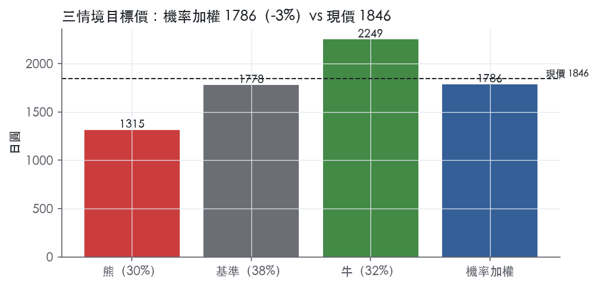
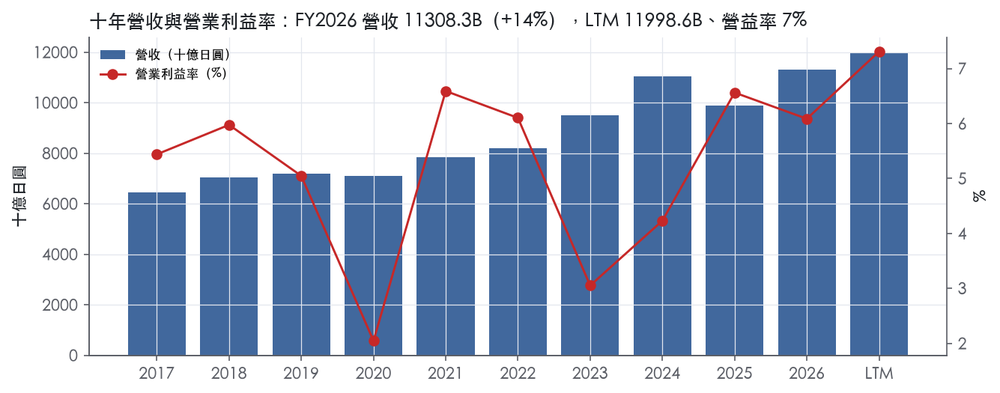
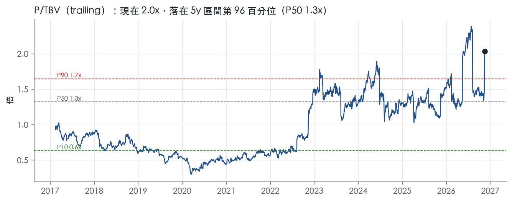
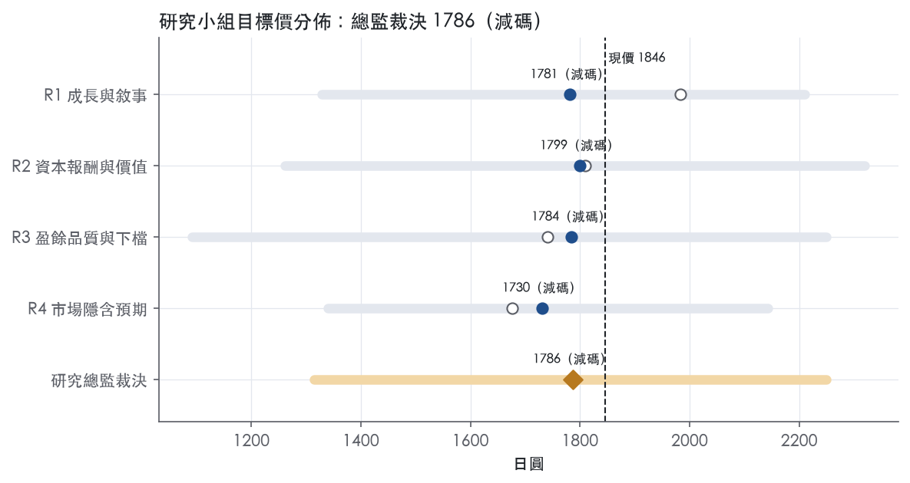
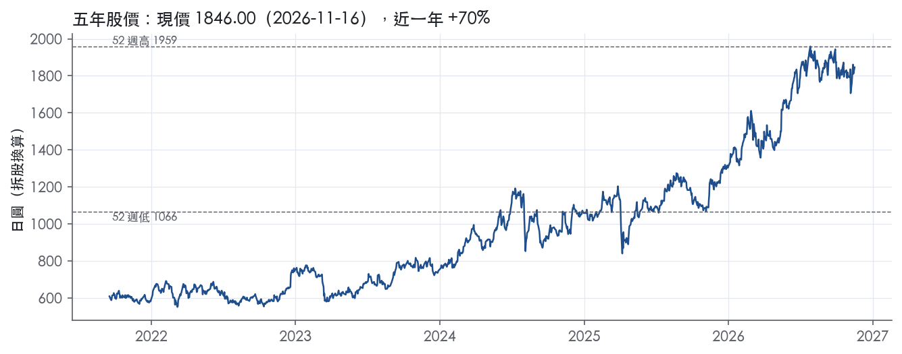

評等總表 › 未分類 › 8750.T
売却益退潮未定價，1.8x偏空｜評等 減碼｜目標價 1786
| 報告日 | 評等 | 目標價 | 當時股價 | 超額報酬 |
|---|---|---|---|---|
| 2026-11-16 | 減碼 | 1,786 | 1,846 | -7.5% |
| 評等 | 減碼（邊界，鄰近中立） |
| 12 個月目標價 | 1786 日圓 |
| 現價 | 1846.00 日圓（2026-11-16） |
| 預期報酬 | 股價 -3.2%＋股息 3.6%＝總報酬 +0.4%；日股門檻 7.8%，超額 -7.5% |
| 估值方法 | P/TBV 1.8x，套在一年後的有形淨值 |
| 三情境 | 熊 1315／基準 1778／牛 2249 |
| 研究流程 | 四位研究員兩輪辯論＋研究總監裁決 |
| 資料來源 | EDINET、TDnet、J-Quants、Yahoo、FRED（全免費） |
売却益退潮未定價，1.8x偏空（研究總監裁決，四位研究員兩輪辯論後）
評等 減碼（邊界，鄰近中立）｜12 個月目標價 1786 日圓（總監三情境機率加權 1790 與研究員中位數 1783 各半）｜現價 1846.00（2026-11-16）
預期報酬：股價 -3.2%＋股息 3.6%＝總報酬 +0.4%。日股門檻 7.8%，超額 -7.5%，離中立的分界不到三個百分點，屬邊界評等（落在其他級距的機率約三成）。
估值方法：P/TBV 1.8x，套在一年後的有形淨值。三情境：熊 1315（30%）／基準 1778（38%）／牛 2249（32%）。
什麼會讓研究總監改變看法：2027-05新中期計畫宣布100B以上買回且FY2028計畫経常利益在売却益退潮下仍高於869.00B，我把倍數上調到2.0x以上並轉中性；FY2027Q3その他有価証券評価差額金續縮且解約返戻金續增，熊機率上調到0.35。
| 過去四季（實際，FY2027Q2） | 未來四季 | 第 5–8 季 | 第 9–12 季 | |
|---|---|---|---|---|
| 淨營收（B） | 11,998.6B | 12,238.5B | 12,360.9B | 12,855.4B |
| 淨營收成長 | 22.4% | 2.0% | 1.0% | 4.0% |
| 稅前利益率 | 7.3% | 6.1% | 6.0% | 6.2% |
| EPS（日圓） | 143.15 | 149.80 | 150.02 | 162.52 |
| EPS 成長 | 22.7% | 4.6% | 0.1% | 8.3% |
| 每股股息（日圓） | — | 0.00 | 0.00 | 0.00 |
| ROTCE | 15.8% | 15.8% | 14.5% | 14.4% |
| 每股有形淨值（日圓） | 901.80 | 988.00 | 1074.56 | 1173.72 |
| P/E（現價） | 12.9x | 12.3x | 12.3x | 11.4x |
| P/TBV（現價） | 2.0x | 1.9x | 1.7x | 1.6x |
| 股息殖利率（現價） | 3.6% | — | — | — |
過去四季為申報數字；預測為研究總監的假設、程式計算。倍數與殖利率都用現價計算，用來看現價對應各期獲利的高低。
| 情境 | 機率（歷史） | 故事 | 未來四季營收成長 | 第 5–8 季稅前利益率 | 倍數 | 目標價 | 股價漲跌 |
|---|---|---|---|---|---|---|---|
| 熊 | 30%（29%） | 對應風險表第1條（股市急跌拖累OCI與ESR）、第2條（利率急變與解約）、第4條（下半年未達標）；本行日本下行路徑日銀停1.50、JGB 2.30，美國Baa利差2.30；ESR緩衝使其為去評價非資本受損，倍數退到3年帶P50 | -4.0% | 4.6% | 1.4x | 1315 | -28.8% |
| 基準 | 38%（39%） | 日銀停在2.00，削減2027-03收尾，FY2027淨利略高於513.00B，FY2028計畫持平偏低，倍數由2.0x收到升息期帶上半部 | 2.0% | 6.0% | 1.8x | 1778 | -3.7% |
| 牛 | 32%（32%） | 日本上行路徑日銀2.25、JGB 3.40；2027-05新中期計畫以ESR 220%宣布大額買回，FY2028計畫在売却益退潮下仍高於869.00B，倍數到1年帶P90 | 5.0% | 7.1% | 2.2x | 2249 | 21.9% |
目標價由程式依研究總監的驅動與倍數計算；機率由研究總監給定。括號內是歷史頻率：把這檔股票過去十年 12 個月報酬的波動形狀，置中在基準情境，結果落在各情境附近的比例。

四位研究員用不同方法各自估值，回應研究總監的質疑後交出第二輪，最後由總監逐點裁決。各研究員的主張見第七章，裁決理由見第八章，完整論證見《研究底稿》。
| 立場（一輪→二輪） | 加權目標價（一輪→二輪） | 評等（一輪→二輪） | 第二輪倍數 | 熊～牛目標價 | |
|---|---|---|---|---|---|
| R1 成長與敘事 | 中性→看空 | 1984→1781 | 中立→減碼 | 1.8x | 1328～2210 |
| R2 資本報酬與價值 | 中性→看空 | 1809→1799 | 減碼→減碼 | 12.0x | 1261～2320 |
| R3 盈餘品質與下檔 | 中性→看空 | 1740→1784 | 減碼→減碼 | 1.8x | 1092～2249 |
| R4 市場隱含預期 | 看空→看空 | 1676→1730 | 減碼→減碼 | 1.7x | 1340～2143 |
| 研究總監裁決 | 看空 | 1786 | 減碼 | 1.8x | 1315～2249 |
目標價由程式依各自的驅動與倍數計算；評等＝機率加權總報酬 − 日股門檻。
第一ライフグループ（前稱第一生命ホールディングス，2026年4月改名）是以國內人壽保險為核心、橫跨北美與大洋洲海外保險、並往資產管理與非保險服務延伸的保險控股集團。当社グループは2026年3月31日現在、当社（保険持株会社）及び当社の関係会社（子会社198社及び関連会社255社）によって構成されております。公司1902年創業，業務跨亞太、北美等全球市場，以人壽保險為核心貢獻人們安心、豐富的生活與地域社會的發展。2026年4月更名為「Daiichi Life」品牌，標誌公司由人壽保險業向「保険サービス業」演進的策略方向。客戶涵蓋個人保戶（透過生涯設計デザイナー等多元通路獲取保障與資產形成服務）與法人客戶（透過Benefit One福利厚生平台等非保險服務觸達）。
公司依報告分部分為「國內保險事業」「海外保險事業」「其他事業」三塊，FY2026國內保險貢獻約六成經常利益、海外保險約一成、其他事業（資產管理＋新業務）貢獻約三成利益，佔比持續上升【判，依分部數字計算】。「国内保険事業」は国内の保険事業を行っている子会社から構成されており、「海外保険事業」は海外の保険事業を行っている子会社及び関連会社から構成されております。FY2026外部顧客経常収益：國內保險事業8,155.63B、海外保險事業3,523.79B、其他事業79.05B；對比FY2025：國內保險事業7,708.82B、海外保險事業3,624.65B、其他事業43.22B——國內保險收入明顯年增，海外保險收入則小幅下滑，其他事業收入翻倍以上成長。分部利益（経常利益口徑）FY2026：國內保險676.27B、海外保險112.63B、其他事業340.20B，三者合計1,129.10B，經集團內部調整後對應合併経常利益753.69B。FY2025分部利益：國內保險584.55B、海外保險219.76B、其他事業221.00B——其他事業利益因資產管理與非保險業務（Benefit One等）大幅成長，海外保險利益則年減約一半。產品線上，國內保險事業旗下第一生命、第一フロンティア生命（主打資產形成・傳承型商品）、ネオファースト生命（已改名第一ネオ生命，主打死差益型保障商品如癌症險）、アイペット損害保険（寵物保險）。海外保險事業主力為美國Protective Life Corporation、澳洲TAL Daiichi Life Australia（含對Challenger Limited入股19.9%布局退休市場），以及透過英國M&G plc約15%入股進入英歐市場。其他事業涵蓋資產管理（對Capula Investment Management LLP追加出資）、不動產（與丸紅完成國內不動產事業整合）以及Benefit One的福利厚生平台「ベネフィット・ステーション」。設備投資方面，FY2026合計設備投資167.9B日圓，其中國內保險事業162.3B、海外保險事業4.0B、其他事業1.5B，主要用於投資用不動產新建改建、營業用不動產及系統開發維護。
公司收入以日本本土為主、美國為第二大市場，並持續往大洋洲與英歐擴張。地區別経常収益（FY2026）：日本7,501.19B、美國2,111.28B、其他1,695.81B，合計口徑對應連結経常収益11,308.27B。FY2025：日本5,782.98B、美國2,208.27B、其他1,885.37B——日本本土營收年增近三成，反映國內保障與資產形成一體化策略奏效。公司未揭露單一客戶貢獻超過合併経常収益10%的情形：特定の顧客に対する経常収益で連結損益計算書の経常収益の10％を占めるものがないため、主要な顧客ごとの記載を省略しております。通路方面，國內保障以「生涯設計デザイナー」為核心的面對面諮詢通路，結合數位化平台提供保障與資產形成一體化諮詢。法人通路上，透過第一生命的業務通路向企業推廣Benefit One「ベネフィット・ステーション」福利平台，並與インフォマート締結資本業務提携擴充財務・經理領域服務。海外通路方面，北美、大洋洲、東南亞各地保險子公司（Protective Life、TAL、越南Dai-ichi Life Vietnam等）各自依當地市場特性營運。股東結構上，前十大股東合計持股35.08%，以日本マスタートラスト信託銀行（信託口）15.71%及日本カストディ銀行（信託口）5.86%居首，顯示機構信託帳戶主導、股權高度分散。
過去四季營收與淨利呈現季度間大幅波動，FY2026Q4因市場環境影響淨利明顯回落，FY2027上半年獲利逐步回升。FY2026Q3（截至2025-12-31）營收3,206.70B、年增21.1%、營益率8.2%、淨利167.25B、EPS 45.91（is/）。FY2026Q4（截至2026-03-31）營收2,987.52B、年增46.7%，但營益率回落至5.2%、淨利降至66.25B、EPS 18.46（is/），反映股票風險資產削減及市場波動對當季損益的衝擊。FY2027Q1（截至2026-06-30）營收2,893.00B、年增26.1%、營益率回升至8.7%、淨利160.06B、EPS 44.44（is/）。FY2027Q2（截至2026-09-30）營收2,911.36B、年增3.2%、營益率7.1%、淨利123.75B、EPS 34.34（is/），現金餘額2,573.64B、總債務1,105.26B。決算短信（2026-11-13）揭露FY2027上半年（2026年4-9月）合併経常収益5,804.36B、経常利益458.79B、歸屬母公司中間純利益283.82B，較去年同期経常収益5,114.06B、経常利益335.23B、中間純利益203.09B明顯成長。公司於該決算短信摘要頁揭露FY2027全年計畫：経常利益869.00B、歸屬母公司淨利513.00B、每股盈餘142.36日圓——以此計畫倒推，下半年淨利需達約229.18B，較上半年283.82B低，意味管理層預期下半年獲利動能轉弱。中間連結貸借対照表顯示，截至2026年9月30日總資產77,014.08B、總負債72,579.23B、純資產合計4,434.85B，較2026年3月底總資產74,159.10B、純資產4,254.21B均增加。
公司將成長引擎定義為國內保險＋資產管理雙軸、海外保險規模擴張，以及跳脫保險框架的「保險服務業」新業務。当社グループは、2030年度までに「グローバルトップティアに伍する保険グループになること」、そして「日本の保険業界の未来を先導する存在になること」の実現に向けた取組みを進めております。國內保險事業方面，公司強調強化保障與資產形成・承継一體化提供，並透過AI等科技提升銷售、核保、事務各部門生産性。海外保險事業方面，北美Protective Life推進資本效率提升與利益規模擴大，並透過決定收購Portfolio Holding, Inc.（2025年11月決定）拓展資產保護業務；大洋洲TAL完成對Challenger Limited合計19.9%股權取得，進軍退休金市場；並透過與英國M&G plc締結長期戰略夥伴關係、取得約15%股權，首度進入英歐保險市場。資產管理事業方面，公司目標成為兼具成長性與高資本效率的事業，並透過對Capula Investment Management LLP追加出資強化另類投資領域、與丸紅完成國內不動產事業整合、與ウェルス・マネジメント締結資本業務提携拓展飯店相關領域。新規事業方面，公司以Benefit One「ベネフィット・ステーション」平台為生態系核心，透過與インフォマート締結資本業務提携擴充財務・經理領域服務，推動公司從人壽保險業向「保険サービス業」轉型。財務資本政策方面，公司推動「資本循環經營」，將事業運營及風險削減所創造的資本重新配置至高資本效率、高成長事業，FY2026以集團修正利益為基礎，來自集團子公司的股息預計達550.0B日圓，較上期增加。風險資產削減方面，公司中長期計畫將市場風險主導的風險結構轉向以保險風險為核心，第一生命計畫在FY2025至FY2027三年間將其持有的國內股票餘額削減1,200.0B日圓，以降低股票相關風險。判斷：公司成長敘事清楚分為「國內保障＋資產形成」防禦性現金流與「海外併購＋另類資產管理」成長引擎兩條線，M&G、Challenger、Capula等一連串少數股權投資顯示管理層偏好以參股而非全額收購方式切入新市場，資本效率較高但整合深度與協同效益仍待觀察。公司明確將FY2027（本中期經營計畫最終年度）視為承接下一期中期計畫的關鍵年，全年計畫経常利益869.00B、淨利513.00B隱含下半年獲利動能需弱於上半年才能對上全年指引，執行風險值得留意。股票風險資產削減計畫（三年共1,200.0B日圓）若按期完成，將持續壓低波動但也可能侵蝕部分投資收益彈性。

第一ライフグループ靠規模和保險牌照累積了一批長期留存的保戶，但過去十年 ROE 平均（量化底稿 8.1%）低於資本成本代理值（量化底稿 10.1%），我們沒有把握未來 5 年 ROE 能持續高於資本成本，因此評為「無護城河」。趨勢判為變寬：日本利率上升、股票風險削減、資本轉往資產管理，正把 ROE 推到資本成本之上（量化底稿最新 11.1%）。
有證據的優勢來源只有三類：無形資產、轉換成本、效率規模。
無形資產（牌照與品牌）：壽險公司要在監理與資本要求下經營，進入門檻來自監理。原文寫明：「這些公司處於保險業法等規制環境之下」。1902 年創業的品牌已於 2026 年 4 月統一為「Daiichi Life」，公司表示要把它當成全球競爭力的源泉。
轉換成本：原文寫道：「傳統終身保險與年金保險，契約期間長達數十年並不罕見」。保戶若解約改投他家，要重新核保，也要接受更高年齡的費率，所以有效契約的黏著度高。
效率規模：以「生涯設計デザイナー」為核心的面對面通路，可以交叉銷售寵物險與福利服務，新進業者難以複製這種通路密度。原文寫道：「透過第一生命的生涯設計デザイナー銷售アイペット的寵物保險、提案ベネフィット・ワン的福利厚生服務等，追求包含非保險服務在內的集團綜效」。
網路效應與成本優勢找不到可驗證的證據，不列入。
數字看不到護城河，而且和「有護城河」的主張衝突，這是評級定為「無」的主因。ROE 十年平均減資本成本為 -2.0%，有資料的 9 年中只有 3 年高於資本成本。ROE 標準差 3.4%、最低 0.9%，稅前利益率最低 2.0%（FY2020 營益率 2.0%），代表獲利主要跟著市場波動，而不是靠定價權支撐。稅前利益率標準差 1.5%不算大，代表有效契約的保險收益確實提供了一個底盤，但這個底盤不足以撐出超額報酬。
資料包的 ROIC 欄（例如 22.1%）不適用於保險公司，因為淨負債是負數（-1,468.38B），算出來會失真，本章以 ROE 為準。
另一點要提醒估值研究員：底稿的資本成本代理值是用美國 10 年債（5.1）加 5% 算的，若改用日本 10 年債（2.841）當基準，日圓資本成本會較低，近年的超額報酬會比底稿樂觀。即使換成日圓門檻，ROE 最低 0.9%的年份仍遠低於任何合理門檻，整個週期內沒有穩定的超額報酬，不足以上修為「窄」。
最大的侵蝕來源是資產負債表上的市場風險，其次是國內通路的信任問題與海外理賠。公司自己承認目前的風險結構偏重市場風險，中長期打算轉為以保險風險為主。
海外方面，海外保險分部的經常利益由 FY2025 的 219.76B 降到 FY2026 的 112.63B。澳洲市場則是「因高度障害與所得補償的給付增加，全業界正在檢討契約條件與商品設計」。
國內方面，公司為「派駐保險代理店人員不當取得資訊」一案道歉，並承諾強化行為風險（conduct risk）管理。這件事直接傷到通路這項優勢。長期來看，人口減少與高齡化會壓縮保障型商品的需求，AI 與數位通路也可能削弱面對面通路的稀缺價值。
目標倍數應與同業持平，不給溢價。過去十年 ROE 沒有穩定高於資本成本，若要給溢價，只能押在利率上行與資本再配置帶來的「變寬」趨勢上；但 P/TBV 現在 2.0x、位於 5 年分位 96.4%，已高於 5 年 P90 的 1.7x，市場已經提前反映大部分改善。要等 ROE 連續數年守在資本成本之上、海外利益波動也收斂，才考慮上修為「窄」並給予溢價。
| 指標 | 最新 | 十年平均 | 標準差 | 最低 | 最高 |
|---|---|---|---|---|---|
| ROE | 11.1% | 8.1% | 3.4% | 0.9% | 12.2% |
| 稅前利益率 | 6.1% | 5.1% | 1.5% | 2.0% | 6.6% |
| 淨營收成長 | 14.5% | 6.8% | 8.3% | -10.4% | 16.0% |
程式計算。資本成本代理值（10 年債＋5%）：10.1%；ROE 十年平均減資本成本：-2.0%；ROE 有資料的 9 年中，高於資本成本 3 年。
FY2026當期純益為436.5B（前期458.4B，年減4.8%），但グループ修正利益反而大增至551.5B（+125.5%），兩者走向相反，顯示非GAAP指標被市場上漲與資本利得墊高，而非核心業務改善。
近三年現金轉換已明顯回升，但FY2021–2023曾出現經營現金流轉負、淨利仍為正的背離期【量化底稿】。FY2021 CFO為-79.90B、淨利363.78B；FY2022 CFO為-462.08B、淨利409.35B；FY2023 CFO為-132.49B、淨利173.74B。FY2024起反轉：CFO依次為997.38B、592.58B、792.16B，對應淨利為320.76B、458.41B、436.60B。LTM自由現金流為862.49B，明顯高於最新年度淨利436.60B。MD&A將FY2026 CFO改善歸因於保險料等收入增加，以及投資活動現金流因有價證券銷售收入增加而支出減少。FY2021–2023的現金背離屬於保單解約返戻金與責任準備金戻入／繰入的壽險業特有時序差異，非造假跡象，但確實意味著那幾年「報表淨利」比「可分配現金」更先行入帳。
公司核心的非GAAP指標是「グループ修正利益」與「基礎利益」。グループ修正利益由551.5B對比GAAP淨利436.5B，差距主要來自良好股市行情下有價證券賣却益增加、以及責任準備金對應債券置換帶來的順ざや擴大等現金基礎調整項目。同時，排除資本利得與特別損益的「基礎利益」實際上是下滑的：集團合計629.4B，年減2.4%，主因是Dai-ichi Life Reinsurance Bermuda因美國利率下降，責任準備金戻入轉為繰入。半期決算短信進一步印證這個落差：H1 FY2027有價證券賣却益由269,741M暴增至550,171M（+103%），是中間純益由203,089M增至283,815M的主要推手。同期還出現為替差損74,480M（去年同期是為替差益946M）與新增金銭の信託運用損27,834M（去年同期為運用益22,657M）。這些證券出售利得、匯兌損益與信託評價損益都屬市場相關、波動性高的項目，我判斷不應全額視為可持續盈餘的一部分。
淨資產由FY2026/3末4,254.21B增至FY2026/9末4,434.85B，資本充足率ESR在FY2026/3末為220%，高於公司自訂下限170%，財務健全度充裕。股利方面，每股配息由前期34.25円加碼20.25円至54.5円，政策基礎是過去三年平均グループ修正利益、配息率目標50%以上。資本工具同時進行結構調整：2025年10月8日發行期限付劣後特約借入218.5B，同日第一生命提前償還2020年發行的永久劣後特約借入181.0B——用有到期日的較便宜資本置換永久劣後債，屬財務工程而非業務性質變化。但庫藏股買回本期幾乎停擺：H1 FY2027自己株式取得僅約0，對比去年同期50,000M（50.0B），同時新股發行673M。集團層級為淨現金部位，淨負債-1,468.38B，槓桿不是估值限制因素【量化底稿】。
SBC／營收：無數據、無燈號。 計分表此項顯示「—」，屬資料缺失而非紅旗。作為傳統相互會社轉型的上市壽險控股集團，股權薪酬本非主要薪酬工具，此缺項不影響盈餘品質判斷。
稀釋股數年變動：LTM 0.0%、近三年平均-3.6%、十年平均-2.8%，燈號黃。 規則判定依據是LTM未達到「≤0%綠燈」門檻。原因可追溯到決算短信：本期庫藏股買回幾乎停擺（約0 vs 去年同期50.0B）、同時有新股發行673M，兩者相抵使淨變動持平於0%。但十年趨勢顯示公司持續減少股數（量化底稿FY2017稀釋股數4.71B逐年降至FY2026 3.64B），屬買回節奏階段性放緩，而非股東被稀釋的結構性警訊【判＋量化底稿】。
（股利＋回購）／淨利：LTM 49.1%、近三年60.6%、十年77.2%，燈號黃。 LTM略低於50%綠燈門檻，主因同上——本期回購幾乎歸零拉低總回饋比率，而股息本身其實是大幅加碼（54.5円 vs 34.25円）。同期公司把資本用於資本結構重整（發行218.5B有期劣後債、提前償還181.0B永久劣後債），屬資本政策轉換期的暫時性現象，非財務惡化訊號。
估值應以GAAP歸屬母公司淨利（436.5B）為主要基準，對グループ修正利益與基礎利益中由股市行情帶動的有價證券賣却益部分予以打折，因為半期純益成長主要靠賣却益翻倍而非核心保險業務（基礎利益反而年減2.4%）。集團淨現金部位（-1,468.38B）與ESR 220%顯示槓桿不構成倍數限制，資本面可支撐持續配息與未來回購恢復。但考量本期回購幾乎停擺、利潤對資本市場高度敏感，對目前P/E 12.9x給予溫和折價評估較為穩健，不宜直接把trailing乘數套用在含大量資本利得的當期EPS上。
| 項目 | LTM | 近三年 | 十年 | 燈號 | 規則 |
|---|---|---|---|---|---|
| SBC／營收 | — | — | — | — | ≤3.0% 綠、>8.0% 紅 |
| 稀釋股數年變動 | 0.0% | -3.6% | -2.8% | 黃 | ≤0.0% 綠、>3.0% 紅 |
| （股利＋回購）／淨利 | 49.1% | 60.6% | 77.2% | 黃 | ≥50.0% 綠、<0.0% 紅 |
程式計算；燈號以 LTM（無則近三年平均）判定。銀行的現金流、淨負債、利息保障是本業，不列入。
| 風險 | 觸發指標（看什麼數字、在哪裡看） | 對 EPS 的影響方向與粗略幅度 | 未來 12 個月發生機率（高／中／低） | 出處 |
|---|---|---|---|---|
| 1. 股票市場急跌拖累資產運用收支與 ESR | 內部 ESR（220%，決算期揭露）、有價証券評価損・売却損、純資産中「その他有価証券評価差額金」（FY2027Q2 為 1,275.15B，較期初 1,372.69B 已下滑） | 方向：負；幅度：大（過去逆ざや與股災年度淨利可從 FY2020 32.43B 低點與 FY2019 48.57 EPS 看出波動幅度） | 中 | ②股式投資ニ関するリスク |
| 2. 長期利率大幅波動衝擊 ALM 與保單解約率 | 日本10年期公債殖利率（jgb10y 現為 2.841%）、日銀政策利率動向、解約返戻金金額（FY2027H1 已年增至 666.08B，去年同期 481.71B） | 方向：不確定（升息初期有利差，急升則引發解約增加與債券評価損）；幅度：大 | 中 | ③金利変動ニ関するリスク |
| 3. 海外保險（Protective Life／TAL）獲利貢獻萎縮、海外事業整合不如預期 | 海外保險事業分部利益（FY2026 已年減近半：219.76B→112.63B）、地區別経常収益美國占比變化 | 方向：負；幅度：中（海外保險貢獻約一成經常利益）【判，依業務概況分部數字】 | 中 | ②海外事業の拡大ニ関連するリスク |
| 4. 全年計畫隱含下半年獲利動能轉弱，實際未達標 | 決算短信全年計畫経常利益 869.00B、淨利 513.00B、EPS 142.36 vs. 上半年已實現経常利益 458.79B、淨利 283.82B（倒推下半年淨利需降至約 229.18B） | 方向：負；幅度：中（若下半年僅持平上半年而非下滑，則上調空間反而存在，但若外部市況轉差則下修風險對稱） | 中 | 研究判斷 |
| 5. 不正行為・資安／個資事件再爆發損及信賴與新契約 | 任何新的従業員金銭不正或個資漏えい公告（如 2024-08、2025-09 已發生的代理店個資流出案）、既契約失効率、新契約件数 | 方向：負；幅度：中（過去案例未見財務數字量化，但涉及行政処分風險） | 低 | ①不正行為等により企業価値が毀損するリスク／①サイバー攻撃・システム障害に関するリスク |
股票投資風險是最直接會打到淨資產與 ESR 的一條，也是公司自己正在積極處理的一條。公司明確設定內部 ESR 以 170% 以上為基本、2026年3月末達 220%，但同時揭露第一生命在現行中期經營計畫期間加速削減股式風險（FY2025-FY2027三年削減國內股票餘額1,200.0B日圓），這表示管理層自己也認為股票曝險是最大的尾部風險來源。資料包顯示 FY2027Q2 期末「その他有価証券評価差額金」為1,275.15B，較FY2026期初1,372.69B已經下滑，股市若進一步走弱，這塊緩衝會持續被侵蝕，進而影響純資產與P/TBV（目前已在96.4%高分位，band.p_tbv現值2.0x）【判，依資料包倍數帶】。
利率風險的方向不對稱、且公司自身在FY2024年度之後經歷過日銀連續升息的環境，必須持續觀察長期金利走勢。原文明確指出日銀自2024年度起已多次升息、長期金利呈上升基調。升息初期有助於縮小逆ざや，但若升速過快則引發解約返戻金急增（資料包顯示FY2027H1解約返戻金666.08B，較去年同期481.71B已增加近四成），同時持有債券的評価損也會擴大。這條風險的監測指標是jgb10y與日銀政策利率的變動速度，而非絕對水準。
海外保險事業的獲利貢獻出現明顯下滑，是這份財報裡最值得盈餘模型重新檢視的訊號。業務概況章揭露海外保險事業分部利益從FY2025的219.76B降至FY2026的112.63B，年減幅接近一半，同期海外保險事業外部顧客経常収益亦小幅下滑（3,624.65B→3,523.79B）。公司持續透過參股（M&G約15%、Challenger 19.9%）而非全額併購的方式擴張海外佈局，這種輕資產參股模式降低了整合風險，但也意味海外事業對集團損益的貢獻度與波動性仍需持續觀察，若美國或大洋洲市場信用環境或利率環境惡化，Protective Life的資產運用收支可能連動衝擊。
全年計畫隱含的下半年轉弱是本季財報最該被直接盯住的數字。決算短信摘要頁揭露FY2027全年計畫経常利益869.00B、歸屬母公司淨利513.00B、EPS 142.36，而上半年已實現経常利益458.79B、淨利283.82B。以此倒推，下半年淨利僅需約229.18B即可達標，低於上半年實績。這可能反映管理層對下半年市況（股市、利率、匯率）持保守假設，也可能反映FY2026Q4曾出現淨利大幅回落（66.25B，EPS 18.46）的經驗讓公司對下半年留有緩衝。無論哪種解讀，這是接下來兩個季度財報發布時第一個要核對的數字。
不正行為與資安事件屬於尾部但會直接打信賴度的風險，過去三年內已發生多起。原文明確揭露2020-2023年第一生命多名前員工金銭不正取得事案、2024年8月及2025年9月兩起代理店個資流出/不當取得事案。這類事件單次對財報數字影響有限，但累積發生會侵蝕レピュテーション並可能招致行政処分，進而影響新契約與既契約流失率，是持續性的監測項目而非一次性衝擊。
日圓兌日圓匯率走勢對海外保險事業損益與資本比率的傳導，公司原文僅泛稱為外匯風險，未給出具體敏感度數字。資料包顯示usdjpy現為158.23（2026-11-06）【資料包總經】，且決算短信揭露FY2027H1為替差損高達74.48B（去年同期為益0.95B），方向已由益轉損且金額不小，值得在後續季度持續追蹤匯率對當期損益的直接貢獻，而非僅視為長期戰略風險。
**P/TBV已處於過去五年96.4%高分位（現值2.0x），顯示市場已經給了相當樂觀的資本回報率重估，若後續股票風險資產削減完成後ROIC或股東權益報酬率未能維持在近兩年15.9%-22.1%的水準，倍數回落的風險比原文列示的任何單一業務風險都更直接衝擊股價【判，依資料包倍數帶與年度ROIC數字】。
現價 1846.00 對應 trailing（過去四季）P/E 12.9x、P/TBV 2.0x（ROTCE 15.8%）、股息殖利率 3.6%。主要估值倍數 P/TBV 現在 2.0x，落在5 年區間第 96 百分位（P10／P50／P90 = 0.6x／1.3x／1.7x）。

把程式的機械基準預測放到現價下，市場付的前瞻倍數是：P/TBV（未來四季） 1.7x、P/E（未來四季） 8.6x、P/TBV（第 5–8 季） 1.5x、P/E（第 5–8 季） 7.6x。
| 倍數 | 現在 | 5 年 P10 | 5 年 P50 | 5 年 P90 | 現在分位 | 全期 P50 |
|---|---|---|---|---|---|---|
| P/E | 12.9x | 6.0x | 11.9x | 15.9x | 62.0% | 10.5x |
| P/TBV | 2.0x | 0.6x | 1.3x | 1.7x | 96.4% | 0.8x |
trailing 倍數（股價 ÷ 過去四季）；分位以每個交易日計算。
（日股同業籃尚未建置：評等門檻用日股絕對門檻＝日本 10 年公債＋股權風險溢酬 5%，見首頁。）
程式的機械基準（成長率從過去四季年增率三年收斂到 6%、利潤率持平）用 P/TBV 5 年 P50（trailing） 估值得到 1403（-24.0%），用現行倍數得到 2163。這兩個數字只是參考點，不是本報告的目標價；研究員對這個定價的回應在第七章。
下表是每位研究員第一輪（各自獨立）與第二輪（回應研究總監的質疑後）的結果。目標價全由程式依各自的假設計算。
| 立場（一輪→二輪） | 加權目標價（一輪→二輪） | 評等（一輪→二輪） | 第二輪倍數 | 熊～牛目標價 | |
|---|---|---|---|---|---|
| R1 成長與敘事 | 中性→看空 | 1984→1781 | 中立→減碼 | 1.8x | 1328～2210 |
| R2 資本報酬與價值 | 中性→看空 | 1809→1799 | 減碼→減碼 | 12.0x | 1261～2320 |
| R3 盈餘品質與下檔 | 中性→看空 | 1740→1784 | 減碼→減碼 | 1.8x | 1092～2249 |
| R4 市場隱含預期 | 看空→看空 | 1676→1730 | 減碼→減碼 | 1.7x | 1340～2143 |
| 研究總監裁決 | 看空 | 1786 | 減碼 | 1.8x | 1315～2249 |
目標價由程式依各自的驅動與倍數計算；評等＝機率加權總報酬 − 日股門檻。
分歧度：第一輪 加權目標價 1676～1984（區間＝現價的 17%）· 倍數 1.7～12x · 立場 中性×3、看空×1；第二輪 加權目標價 1730～1799（區間＝現價的 4%）· 倍數 1.7～12x · 立場 看空×4（方向一致）。

| 研究員 | 第二輪主張 | 堅持的理由 |
|---|---|---|
| R1 成長與敘事 | 偏空，目標 1.8x P/TBV，位在升息期一年區間的上半部。 | 利差順風方向成立，核心利益持平不續降，熊情境不給更低倍數。 |
| R2 資本報酬與價值 | 偏空，目標 12.0x P/E，貼近五年中位數 11.9x，不給溢價。 | 拒絕改用 P/TBV：商譽與評價差額正在改寫有形淨值。 |
| R3 盈餘品質與下檔 | 偏空，目標 1.8x P/TBV，等於三年區間的上緣。 | 熊情境要扣有價證券評價差額損失，倍數只給 1.2x。 |
| R4 市場隱含預期 | 偏空，目標 1.7x P/TBV，取五年區間的上緣。 | 市場把含出售利得的獲利當常態，2.0x 沒有反映利得退場。 |
每位研究員的逐條回應與完整論證見《研究底稿》（8750.T_研究底稿_2026-11-16.docx）。
| 分歧點 | R1 | R2 | R3 | R4 | 什麼資料會分出勝負 |
|---|---|---|---|---|---|
| 目標倍數與尺 | 1.8x P/TBV@NTM（1 年帶 P50–P90 之間、＝3 年 P90） | 12.0x eps@ntm，拒換尺：TBV 分母被商譽與 OCI 重塑 | 1.8x P/TBV@NTM（3 年 P90） | 1.7x P/TBV@NTM（5 年 P90） | 2027-05 決算：FY2028 計畫與新中期計畫；FY2027Q3 その他有価証券評価差額金 |
| Q5–Q8 利潤率：核心收益能否接手売却益 | 5.8%（準備金繰入減少會回頭） | 5.5% | 6.6%（保費＋利息配當複利） | 5.8%，營收 −4% | 2027-05 FY2028 計畫経常利益對 869.00B；有報 FY2027 基礎利益對 629.4B |
| 熊情境深度與機率 | 1.4x、−25%、28% | 10.5x P/E、−30%、27% | 1.2x（1.4x 折入 OCI 損失⅓）、−39%、20% | 1.4x、−21%、29% | 下次股市急跌時短信揭露的 OCI 當期變動與 ESR 實際幅度 |
| 股數變動：買回是否恢復 | −1.0% | −0.5% | −0.8% | −1.6%（回基準） | 2027-05 與決算同時公布的買回額度 |
分歧一，裁 R3：1.8x P/TBV@NTM。 主尺依劇本是 P/TBV。R2 拒換尺的證據——無形固定資産 963,435→1,170,290 百萬円、その他有価証券評価差額金 1,372,692→1,275,154 百萬円——反而支持 P/TBV：商譽在 TBV 定義裡已扣掉，是保守不是失真；OCI 變動放進情境處理。何況他的 12.0x 得 1798、R1／R3 的 1.8x 得 1778／1781，兩把尺互證，差異不在尺。水準上，R4 的 1.7x 是 5 年 P90，那條帶大半在負利率期，又恰等於程式在基準 TBV 上算的市場隱含 NTM 倍數，不是獨立的錨；E3 要的隱含 ROTCE／g 反推他沒做出來。現行 2.0x（5 年分位 96.4%，band.p_tbv）不給，理由全是個股因素：FY2026 基礎利益 629.4B、年減 2.4%；1,200.0B 國內股票削減在 FY2027 結束，上半年売却益 550,171 百萬円是有到期日的收入；自己株式の取得 △0 對前年同期 △50,000 百萬円；海外保險分部利益 219.76B→112.63B。程式合理值 4.0x 因 g 6.0% 貼近要求報酬 7.8% 而不穩定，四位一致不採，我同意。但也不退到 1 年帶 P50 1.5x：ROE 11.1% 高於十年平均 8.1%（護城河章量化底稿）、近 11 季 ROTCE 13.4% 遠高於日圓要求報酬 7.8%，日銀 2.00、JGB 3.00 的本行路徑對壽險是淨受益。1.8x＝3 年帶 P90、1 年帶 P50 與 P90 之間，是升息期帶的上半部。
分歧二，裁 own：利潤率 6.1／6.0／6.2%，營收 2／1／4%。 R3 方向對：保険料等収入 3,330,997→3,550,330、利息及び配当金等収入 767,907→896,094 百萬円是經常流量，日銀到 2.00 後再投資利差逐年疊加。但 6.6／6.9% 把利差立刻全數落到底線，漏了三件事：FY2026 基礎利益在升息中仍年減 2.4%，Bermuda 再保的美國利率效果在本行美國前提 10 年 4.98 持平下不會回轉；賣掉 1,200.0B 國內股票同時拿掉其配當；R1 指出的責任準備金繰入額 876,808→539,077 與解約返戻金 481,713→666,078 百萬円【同上】是會回頭的機械效果。R1／R4 的 5.8% 則沒算進本研究部營業利益預測系統性偏低（R1 誤差中位數 −2.8%、總監 −2.4%；R4 +0.2% 最準），我以 R4 的 5.8% 為底上修到 6.0%、y3 6.2%。y1 取 R3 的 6.1%，對應淨利略高於公司計畫 513.00B。營收取 R1：R4 的 y2 −4% 把毛額退潮全放進營收，卻不給保費與利息配當增額的抵銷；R3 的 4% 又當削減後沒有斷層。
分歧三，裁 R1：1.4x、離基準 −25%、機率 30%。 R3 把 OCI 損失三分之一折進倍數得 1.2x，方法誠實，但 −39% 已在置中分布 P10（−31%）之外，≤−40% 歷史只有 2%，是尾部不是「12 個月內比較接近熊」的典型壞年；ESR 220% 對 170% 下限加上已進行的股票削減，讓 R4 說的「去評價而非資本受損」更站得住。R1 的 1.4x＝3 年帶 P50，營收 −4／−3／2%、利潤率 4.7／4.6／5.0%，落在置中分布 P25 −17% 與 P10 −31% 之間，程式對照熊區 30%。R1 看不到風險表，我補上對應：第 1 條（股市急跌拖累 OCI 與 ESR）、第 2 條（利率急變與解約）、第 4 條（下半年未達標）；股數改 0%（R2／R3 的熊情境），壞年不會恢復買回。
分歧四，裁 R3：−0.8%。 R4 回到基準 −1.6% 的證據（DPS 34.25→54.5 円、ESR 220%）證明的是能力不是意願：上半年買回 △0，同期無形固定資産由 963,435 增到 1,170,290 百萬円，資本正流向 Portfolio Holding、Challenger、M&G、Capula 等參股。R2 的 −0.5% 又太低：十年平均 −2.8%、近三年 −3.6%（財務體質章量化底稿），子公司上繳股息 550.0B與 2027-05 新中期計畫都是 NTM 內的買回窗口。−0.8% 對應下半年恢復但規模不及前年；牛 −2.0%、熊 0%。
漂移與總經。 R1 加權目標價 −10.2%、靠攏 83%，R3 靠攏 63%，但兩人每條修正都附了第一輪沒用過的證據（R1：準備金繰入與解約數字、轉發的基礎利益；R3：OCI 當期變動 △96,757 百萬円、經常流量），是回應審查而非向中位數靠，不退回，drift_rejections 為空。四位 macro_deviations 皆空，無偏離可裁；R4 在 E3 以 JGB 3.00 高於 2.84 推論要求報酬更高，提醒門檻與現價已反映現行利率，利率只進驅動不進倍數折價，他的 1.7x 並非靠此，不另處理。最終假設依本行日本前提（日銀 2.00、JGB 3.00、USDJPY 153）與美國前提（10 年 4.98）。
現價 2.0x trailing P/TBV（在基準模型 NTM TBV 上是 1.7x）把 FY2027 含売却益的 ROTCE 當成常態；我們的 NTM 淨利貼近公司計畫，差距不在盈餘而在倍數，倍數的爭點是「核心收益能否接手売却益」（分歧二）。立場看空與評等減碼一致：基準情境絕對下檔只有 −3% 上下（R1／R3 同倍數的程式點估 −3.5%～−3.7%）、股息率 3.6%（快照）墊底，但機率加權總報酬低於 7.8% 門檻，是相對跑輸，不是崩跌。
現價 1846.00 → 點估目標價 1778 → 機率加權目標價 1790 → 目標價 1786，差距拆成五段：成長順延 +317 日圓（市場現行倍數 2.0x 一年後持平、獲利照機械基準）；倍數差 -252 日圓（總監倍數 1.8x vs 市場持平倍數 2.0x，同一機械基準預測）；盈餘差 -133 日圓（總監預測的未來四季有形淨值 3,547.8B vs 機械基準 3,781.1B，同一倍數）；情境不對稱 +12 日圓（機率加權減點估）；研究小組平均 -4 日圓（總監機率加權 1790 與研究員第二輪中位數 1783 各半）。各段相加等於目標價減現價。本階段未接賣方共識，差距以市場隱含預期為對照。
| 驅動 | 機械基準 | 研究總監 | 差異 |
|---|---|---|---|
| 未來四季營收成長 | 17.0% | 2.0% | -15.0 pp |
| 第 5–8 季營收成長 | 11.5% | 1.0% | -10.5 pp |
| 第 9–12 季營收成長 | 6.0% | 4.0% | -2.0 pp |
| 未來四季稅前利益率 | 7.3% | 6.1% | -1.2 pp |
| 第 5–8 季稅前利益率 | 7.3% | 6.0% | -1.3 pp |
| 第 9–12 季稅前利益率 | 7.3% | 6.2% | -1.1 pp |
| 稅率 | 24.9% | 28.0% | +3.1 pp |
| 股數年變動 | -1.6% | -0.8% | +0.8 pp |
研究總監只寫偏移，未寫的沿用基準。銀行的 D&A、資本支出、SBC 不影響估值，不列。
| 期 | 淨營收 | 成長 | 稅前利益率 | 稅前利益 | 淨利 | EPS | 每股股息 | 期末有形淨值 | 每股有形淨值 |
|---|---|---|---|---|---|---|---|---|---|
| 未來四季 | 12,238.5B | 2.0% | 6.1% | 746.6B | 537.5B | 149.80 | 0.00 | 3,547.8B | 988.00 |
| 第 5–8 季 | 12,360.9B | 1.0% | 6.0% | 741.7B | 534.0B | 150.02 | 0.00 | 3,827.8B | 1074.56 |
| 第 9–12 季 | 12,855.4B | 4.0% | 6.2% | 797.0B | 573.9B | 162.52 | 0.00 | 4,147.6B | 1173.72 |
程式依上表的驅動計算；季度用最近四季季節性分攤；不含營運資金變動。
估值方法：P/TBV 1.8x，套在一年後的有形淨值。研究總監目標倍數的錨：自家trailing P/TBV帶：3年P90 1.8x、1年帶P50 1.5x與P90 2.2x之間；ROE/ROTCE高於日圓要求報酬故不退1年P50，基礎利益年減、削減利得到期、買回停擺故不給現行2.0x。
計算：有形淨值（未來四季期末） 3,547.8B × 1.8x＝權益價值 6,386.1B，除以未來四季的股數 → 點估目標價 1778（-3.7%）；隱含 P/E（未來四季）11.9x、P/E（第 5–8 季）11.9x。
總監三情境機率加權目標價 1790，研究員第二輪中位數 1783，兩者各半＝目標價 1786；預期報酬 股價 -3.2%＋股息 3.6%＝總報酬 +0.4%；減評等門檻 7.8%（日股絕對門檻 7.8%（日本 10 年公債 2.84%（2026-11-12）＋股權風險溢酬 5%；日股同業籃尚未建置））＝超額報酬 -7.5% → 評等 減碼（超額 >+15% 買進、+5～+15% 加碼、±5% 中立、−5～−15% 減碼、<−15% 賣出）。同一份資料重開研究小組，超額約有正負四個百分點的雜訊（一個標準差，二十檔實測）；以此估計，評等落在其他級距的機率約三成。超額離中立的分界不到三個百分點，應視為邊界評等。
| 情境 | 機率 | 未來四季成長 | 第 5–8 季成長 | 第 5–8 季稅前利益率 | 有形淨值（未來四季期末） | 倍數 | 目標價 |
|---|---|---|---|---|---|---|---|
| 熊 | 30% | -4.0% | -3.0% | 4.6% | 3,400.1B | 1.4x | 1315 |
| 基準 | 38% | 2.0% | 1.0% | 6.0% | 3,547.8B | 1.8x | 1778 |
| 牛 | 32% | 5.0% | 4.0% | 7.1% | 3,627.2B | 2.2x | 2249 |
| 主張 | 驗證日 | 看哪個數字 | 門檻 |
|---|---|---|---|
| FY2027歸屬母公司淨利略高於公司計畫但不大幅超標 | 2027-05-20 | 決算短信 FY2027 親会社株主に帰属する当期純利益 | 513.00B ~ 560B |
| FY2028期初計畫経常利益不高於FY2027計畫 | 2027-05-20 | 決算短信 FY2028 業績予想 経常利益 | <= 869.00B |
| 削減結束後FY2028上半年有価証券売却益明顯低於FY2027上半年 | 2027-11-20 | 半期決算短信 中間連結損益計算書 有価証券売却益 | < 550,171百萬円 |
| trailing P/TBV自高分位回落 | 2027-11-16 | trailing P/TBV（band.p_tbv） | <= 1.9x |
到期由程式結算（第 5 階段帳本）。
| 期 | 淨營收 | 成長 | 稅前利益率 | 淨利 | EPS | 每股股息 | ROE | ROTCE | 每股有形淨值 | 效率比 | 稀釋股數 |
|---|---|---|---|---|---|---|---|---|---|---|---|
| FY2017 | 6,456.8B | — | 5.4% | 231.3B | 49.12 | — | — | 8.6% | — | — | 4.7B |
| FY2018 | 7,037.8B | 9.0% | 6.0% | 363.9B | 77.61 | — | 10.6% | 10.9% | — | — | 4.7B |
| FY2019 | 7,184.1B | 2.1% | 5.0% | 225.0B | 48.57 | — | 6.0% | 6.9% | 710.51 | — | 4.6B |
| FY2020 | 7,114.1B | -1.0% | 2.0% | 32.4B | 7.13 | — | 0.9% | 1.0% | 728.70 | — | 4.6B |
| FY2021 | 7,827.8B | 10.0% | 6.6% | 363.8B | 81.35 | — | 8.5% | 8.3% | 978.55 | — | 4.5B |
| FY2022 | 8,209.7B | 4.9% | 6.1% | 409.4B | 95.74 | — | 8.9% | 10.5% | 949.33 | — | 4.3B |
| FY2023 | 9,508.8B | 15.8% | 3.1% | 173.7B | 42.73 | — | 4.9% | 9.0% | 487.45 | — | 4.1B |
| FY2024 | 11,028.2B | 16.0% | 4.2% | 320.8B | 82.40 | — | 9.8% | 10.1% | 836.02 | — | 3.9B |
| FY2025 | 9,876.6B | -10.4% | 6.6% | 458.4B | 123.70 | — | 12.2% | 17.7% | 701.74 | — | 3.7B |
| FY2026 | 11,308.3B | 14.5% | 6.1% | 436.6B | 119.82 | — | 11.1% | 14.6% | 825.72 | — | 3.6B |
EDINET 有價證券報告書 XBRL（舊年度 US GAAP 公司只有經營指標摘要）；每股數據已依拆股換算到現在股數基準。銀行的營業利益＝稅前利益；CFO、FCF、淨負債對銀行沒有意義，不列。
| 期 | 期末 | 推導 | 淨營收 | 稅前利益率 | 淨利 | EPS | 淨利息收入 | 效率比 | 信用成本率 | 淨沖銷率 | ROTCE |
|---|---|---|---|---|---|---|---|---|---|---|---|
| FY2024Q2 | 2023-09-30 | 2,533.3B | 5.6% | 90.1B | 22.91 | — | — | — | — | 15.9% | |
| FY2024Q3 | 2023-12-31 | 2,230.7B | 2.9% | 60.5B | 15.51 | — | — | — | — | 10.9% | |
| FY2024Q4 | 2024-03-31 | 3,260.8B | 5.3% | 102.8B | 26.87 | — | — | — | — | 13.0% | |
| FY2025Q2 | 2024-09-30 | — | — | — | — | — | — | — | — | — | |
| FY2025Q3 | 2024-12-31 | 2,648.5B | 7.0% | 120.5B | 32.73 | — | — | — | — | 12.4% | |
| FY2025Q4 | 2025-03-31 | 2,036.9B | 9.7% | 104.7B | 28.46 | — | — | — | — | 16.1% | |
| FY2026Q1 | 2025-06-30 | 2,294.1B | 4.2% | 43.2B | 11.75 | — | — | — | — | 4.8% | |
| FY2026Q2 | 2025-09-30 | 2,820.0B | 8.5% | 159.9B | 43.70 | — | — | — | — | 20.3% | |
| FY2026Q3 | 2025-12-31 | 3,206.7B | 8.2% | 167.3B | 45.91 | — | — | — | — | 16.4% | |
| FY2026Q4 | 2026-03-31 | 2,987.5B | 5.2% | 66.3B | 18.46 | — | — | — | — | 8.9% | |
| FY2027Q1 | 2026-06-30 | 2,893.0B | 8.7% | 160.1B | 44.44 | — | — | — | — | 14.0% | |
| FY2027Q2 | 2026-09-30 | 2,911.4B | 7.1% | 123.8B | 34.34 | — | — | — | — | 15.2% |
日本財報是年初至今的累計數：單季＝累計相減（Q2＝6 個月−3 個月、Q4＝年度−9 個月）；第 1、3 季多半不揭露現金流量表，單季現金流常空白，LTM 現金流用半年度拼。

本報告由 equity-desk 多代理系統產出，建置中版本，僅供內部研究與方法驗證，不構成投資建議。所有數字以 datapack.json 為準。